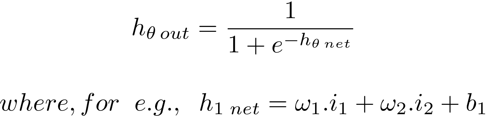
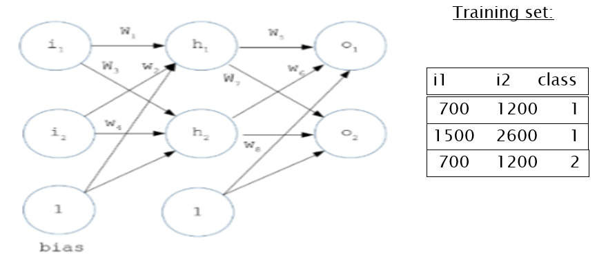

Snehanshu Saha Sir from BITS Pilani
For Teaching the mathematical concepts and also showing with examples on how to develop a Neural Network.
For guiding in many ways and sharing his wisdom in the art of machine learning.
And for sharing a working Artificial MultiLayerPerceptron implementation in Python.
Ramachandran C - M.Tech Student of Snehanshu Saha Sir in BITS Pilani and Primary Author of Pyano.
An deep artificial neural network that utilizes back propagation for training. It has a total of 5 layers of neurons. The hidden layers have 4 each, the input layer has 3 and the output layer has 6 neurons (as per the number of distinct classes in the given dataset).
The Layers in the Neural Network consist of:
1. Single Input Layer with 3 neurons.
2. Three Hidden Layers with 4 neurons each.
3. Single Output Layer with 6 neurons.
It represents a 6 class classification problem.
Weights are initialized randomly.
The Activation function is a sigmoid.

The Dataset has samples with 3 features each.

Define and implement an Object-Oriented Deep Neural Network Framework (capable of implementing DNNs with multiple hidden layers) that predicts classes for a test set with decently accurate results.
Implement Back propagation algorithm to update weights.
Compute the forward and backward passes with error gradients for every input sample.
Repeat the process for every sample in the training set.